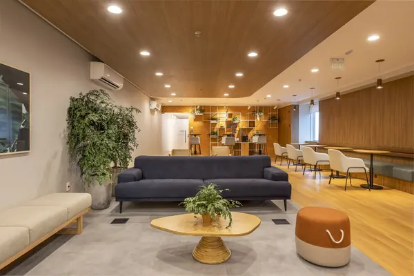
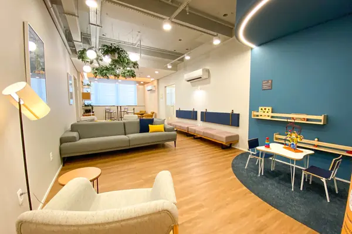
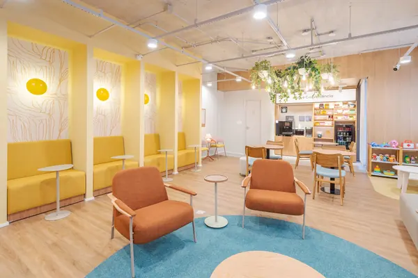
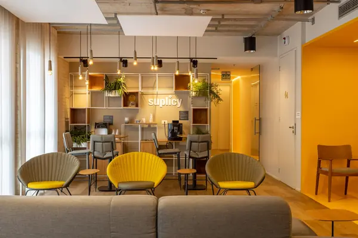

Unidade Paulista
Av. Paulista, 2064, 21º andarBela Vista, São Paulo/SP
Além do atendimento domiciliar e da teleconsulta, a TLS atende em consultórios Livance em São Paulo e em Santo André.
Atendimento da TLS em consultório Livance, exclusivamente mediante agendamento e sujeito à disponibilidade. Confira a unidade escolhida no momento do agendamento.





Para quem tem dificuldade de deslocamento, a fisioterapia domiciliar atende a Mooca e bairros próximos de São Paulo.
Ver bairros atendidosOrientação e acompanhamento fisioterapêutico por vídeo, quando a avaliação indicar que é adequado.
Agendar teleconsultaNão. São consultórios Livance onde a TLS realiza atendimentos presenciais, exclusivamente mediante agendamento e sujeitos à disponibilidade.
Não. Todos os atendimentos nas unidades precisam de horário marcado pela agenda online.
Sim, na Mooca e em bairros próximos de São Paulo, conforme a agenda. Veja os bairros na página de fisioterapia domiciliar.